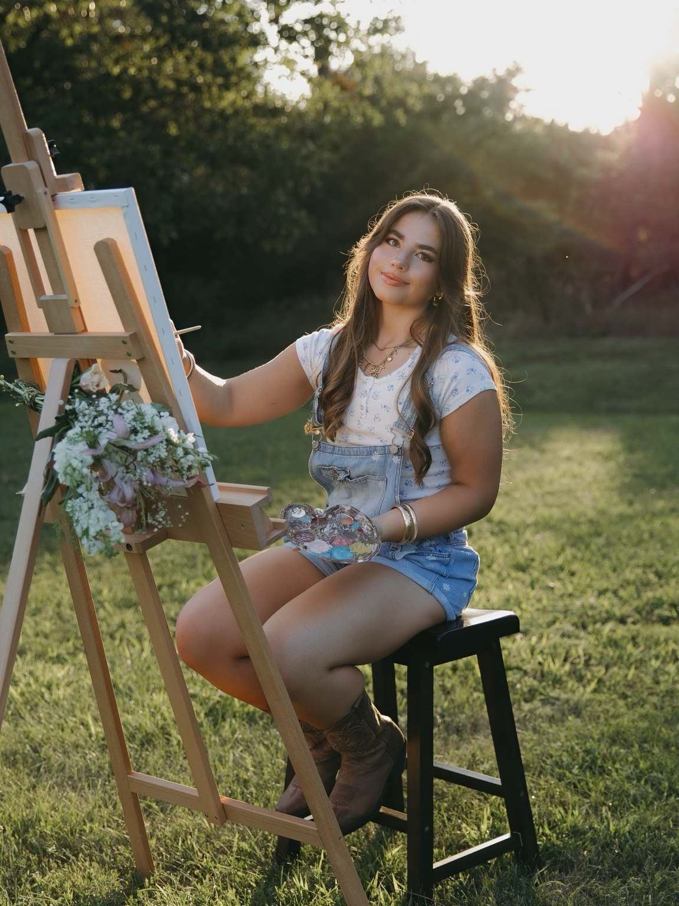
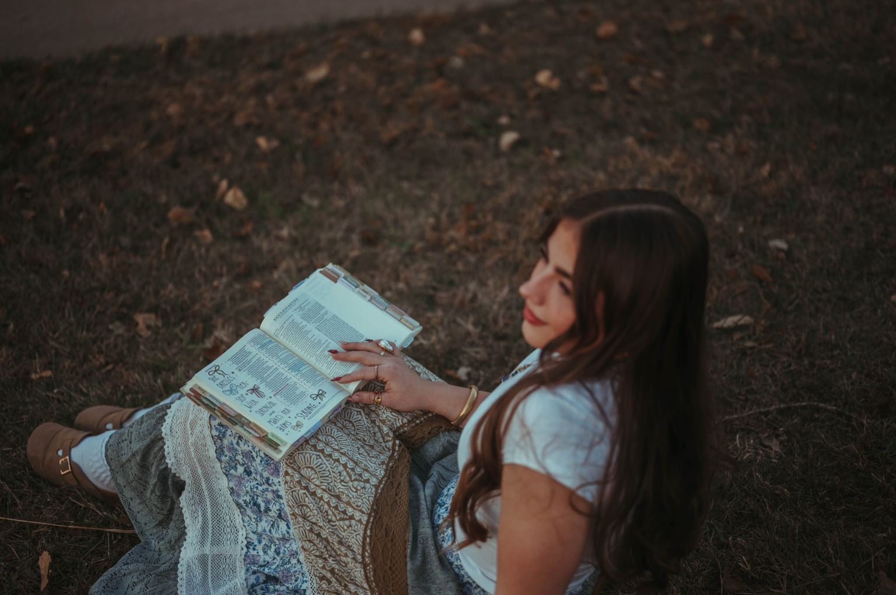
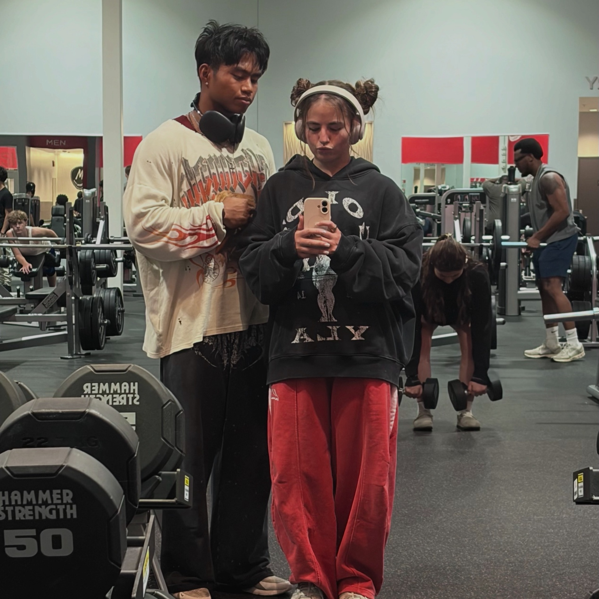

What Layla Enjoys
Layla Bland enjoys a variety of hobbies that reflect her creativity, personality, faith, and dedication to fitness. From painting and drawing to reading and working out, these activities are an important part of her life.
Creative Arts

Painting, Drawing, and Fashion
Layla has been interested in art since childhood. She enjoys painting, drawing, fashion, and finding new ways to express her creativity.
Art allows Layla to explore new ideas and express herself through different styles and designs.
Faith and Reading

Personal Growth and Reflection
Layla values spending time growing in her faith and strengthening her relationship with Jesus.
She also enjoys reading during her free time. These interests represent the thoughtful and reflective side of her personality.
Fitness

Gym and Powerlifting
Fitness is one of Layla's biggest passions. She goes to the gym approximately four to five times each week.
During high school, she competed in powerlifting competitions, placed in the top three, and qualified for Nationals.
Her passion for fitness connects to her future goal of opening a women-only gym where women can feel safe and supported.
Other Things Layla Enjoys
- Cooking and baking
- Browsing Pinterest
- Watching movies and television shows
- Exploring fashion and creative ideas